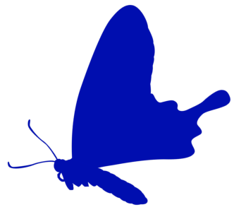
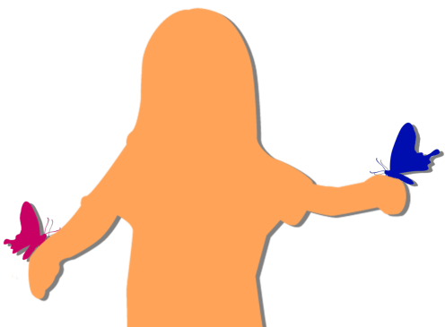

A Best Friend and Then Family
―It was the summer vacation of my first year of elementary school.
The days were long, and we kept on playing and playing.
Every day was fun, and being able to be together made us happy―
Always, always, we would play until the stars came out.
Then, one time―
The days were long, and we kept on playing and playing.
Every day was fun, and being able to be together made us happy―
Always, always, we would play until the stars came out.
Then, one time―


"Hey, look! A pretty butterfly!"
"It really is!"
A summer evening. A single butterfly was fluttering gracefully before our eyes.
And just then―
"It really is!"
A summer evening. A single butterfly was fluttering gracefully before our eyes.
And just then―
"Oh! Another pretty butterfly!"
"Let's catch them, Akane!"
Akane and I chased after the two butterflies.
But Akane kept getting farther and farther away from me.
"Wait up, Akane!"
"Mifuyu, hurry, hurry!"
"Let's catch them, Akane!"
Akane and I chased after the two butterflies.
But Akane kept getting farther and farther away from me.
"Wait up, Akane!"
"Mifuyu, hurry, hurry!"
It was the hour when the summer night sky was about to rise in the east.
I ran desperately along a path where I could hardly see my feet.
"Haah... haah... whoa!"
I ran desperately along a path where I could hardly see my feet.
"Haah... haah... whoa!"
Akane was all I'd been watching as I ran. Maybe that was why I tripped over something and fell.
"Uugh... it hurts... uugh... Waaah! It hurts..."
"Are you okay, Mifuyu?!"
Akane came running over right away.
"Uugh... it hurts... uugh... Waaah! It hurts..."
"Are you okay, Mifuyu?!"
Akane came running over right away.
"There, pain, pain, fly awaaay!"
Akane gently laid her hand on my scrape.
"You're okay now, right?"
"Uugh..."
Akane took my hand and pulled me to my feet.
Akane gently laid her hand on my scrape.
"You're okay now, right?"
"Uugh..."
Akane took my hand and pulled me to my feet.
It hadn't hurt all that much, but I bawled because I wanted the attention of Akane, who'd gone on ahead.
Akane probably knew that too, since all she did was lay her hand on my scrape.
Akane probably knew that too, since all she did was lay her hand on my scrape.
In front of us, sunflowers taller than we were.
We lined up our heads like the sunflowers too, and looked up at the summer evening sky.
In the east, stars were already beginning to twinkle here and there.
We lined up our heads like the sunflowers too, and looked up at the summer evening sky.
In the east, stars were already beginning to twinkle here and there.

Then the two butterflies we'd been chasing fluttered around us.
And they landed one on each of Akane's hands and rested their wings.
And they landed one on each of Akane's hands and rested their wings.

"Here, a butterfly for Mifuyu!"
"Pretty... Hello, cute little butterfly!"
The two butterflies didn't seem frightened at all, and rested calmly right in front of us.
"Pretty... Hello, cute little butterfly!"
The two butterflies didn't seem frightened at all, and rested calmly right in front of us.
"Do you think these little butterflies are a family?"
"Maybe they're friends?"
The two butterflies flew up together into the dim, wide sky.
"Bye-byyye, little butterflies! Take care!"
"Maybe they're friends?"
The two butterflies flew up together into the dim, wide sky.
"Bye-byyye, little butterflies! Take care!"
"Those little butterflies are close, just like us!"
"You're right, Mifuyu!"
Night fell completely, and Motoki-cho was covered by the starry summer sky.
"You're right, Mifuyu!"
Night fell completely, and Motoki-cho was covered by the starry summer sky.

"The stars are pretty today too."
"Hey, Mifuyu, did you know? In a big city like Tokyo, you can't see a sky like this, apparently."
"How come?"
"The city's so bright you can't see the stars in the sky, apparently."
"Hmm. Then I'll stay in Motoki-cho forever!"
"Me too!"
"Hey, Mifuyu, did you know? In a big city like Tokyo, you can't see a sky like this, apparently."
"How come?"
"The city's so bright you can't see the stars in the sky, apparently."
"Hmm. Then I'll stay in Motoki-cho forever!"
"Me too!"
It was a small promise.
Both Akane and I were born in Motoki-cho, raised in Motoki-cho, and would live our lives in Motoki-cho.
May I always, always be able to look at this starry sky together with Akane.
Both Akane and I were born in Motoki-cho, raised in Motoki-cho, and would live our lives in Motoki-cho.
May I always, always be able to look at this starry sky together with Akane.
This is my best friend since the day I was born: Akane.
She's very dear to me, someone I could never replace.
She's very dear to me, someone I could never replace.
Even after we grew up, that didn't change.
We aren't related by blood, but by now you could call us family.
Akane is a big sister, older than me by only a few months.
We aren't related by blood, but by now you could call us family.
Akane is a big sister, older than me by only a few months.
My mom died giving birth to me, and my dad died of an illness too, around when I started high school.
Through all of it, Akane was there for me, the same as ever.
It was one day, a few months after Dad's funeral...
Through all of it, Akane was there for me, the same as ever.
It was one day, a few months after Dad's funeral...

"So this is Primavera. It looks expensive..."
Akane had picked this cafe as our meeting place.
She'd said she would at least treat me to a drink, but...
for a high schooler like me, it felt like a bit much...
Akane had picked this cafe as our meeting place.
She'd said she would at least treat me to a drink, but...
for a high schooler like me, it felt like a bit much...


"Mifuyu, over here."
In a fancy place like this, Akane was relaxing without the least bit of nerves.
"Sorry, sorry! Did I keep you waiting...?"
I hurried over to Akane in a fluster.
In a fancy place like this, Akane was relaxing without the least bit of nerves.
"Sorry, sorry! Did I keep you waiting...?"
I hurried over to Akane in a fluster.

"Is this okay? A place this expensive..."
"Now that a new cafe's opened, we have to check it out. There's no other place this nice in Motoki-cho."
"Now that a new cafe's opened, we have to check it out. There's no other place this nice in Motoki-cho."
"Y-you're right! I'll do my best so I can be like Akane too!"
I was always trying to catch up to Akane.
Even in high school, Akane, cool as she was, still turned a kind, warm gaze on me.
Someone like Akane was popular with boys, too.
I was always trying to catch up to Akane.
Even in high school, Akane, cool as she was, still turned a kind, warm gaze on me.
Someone like Akane was popular with boys, too.
"Oh, by the way, Akane, how's your boyfriend from the technical high school? Going well?"
"Ryoji-kun, you mean? Yeah, it's going well. But for all his looks... he's too much of a kid, maybe..."
"U-uh-huh..."
Akane was popular, but until now she'd never had a boyfriend.
The same Akane had decided to go out with him, so maybe this was just her covering up her embarrassment?
"Ryoji-kun, you mean? Yeah, it's going well. But for all his looks... he's too much of a kid, maybe..."
"U-uh-huh..."
Akane was popular, but until now she'd never had a boyfriend.
The same Akane had decided to go out with him, so maybe this was just her covering up her embarrassment?
"Lucky you. I want a boyfriend too..."
"Mifuyu, I think you've got good raw material... Shouldn't you work a little more on being independent, or rather, on being able to take the plunge?"
"I know I'm the clingy type myself, but..."
"Mifuyu, you're always such a big baby, so even when you like someone, you can't go for it, right?"
"Uugh... I... I really do depend on Akane too much, don't I..."
"Mifuyu, I think you've got good raw material... Shouldn't you work a little more on being independent, or rather, on being able to take the plunge?"
"I know I'm the clingy type myself, but..."
"Mifuyu, you're always such a big baby, so even when you like someone, you can't go for it, right?"
"Uugh... I... I really do depend on Akane too much, don't I..."
"That doesn't bother me at all.
But if that's why you can't take the plunge, Mifuyu... then it's a problem."
"Hmm, what should I do..."
"Hmm, what should I do..."
"You don't need to do anything. Trying to fix your personality will only cramp you.
Even if you got a boyfriend that way, Mifuyu, you'd only wear yourself out."
"Uugh..."
"Uugh..."
"Mifuyu, what do you want to do?
Do you want to change yourself? Do you want a boyfriend?"
"Um... Which one should I start with..."
"Oh, you..."
There I was, trying to get Akane to decide even things about myself.
It hit me all over again that I really was the clingy type.
"Um... Which one should I start with..."
"Oh, you..."
There I was, trying to get Akane to decide even things about myself.
It hit me all over again that I really was the clingy type.
"I don't know which one you should start with... but why not start with appearances, for now?"
"With appearances?"
"Right. Like changing that hiiicky fashion of yours, or fixing your habit of slouching. That alone changes how people see you. When the way people see you changes, Mifuyu, I bet you'll be able to change too."
"Uugh... That's hard..."
"With appearances?"
"Right. Like changing that hiiicky fashion of yours, or fixing your habit of slouching. That alone changes how people see you. When the way people see you changes, Mifuyu, I bet you'll be able to change too."
"Uugh... That's hard..."
"Like I said before, you've got good raw material.
Let's see... to put it nicely, a beauty. To put it badly...
an old face?"
"So mean!"
"Having an old face in high school means you'll have a face that doesn't age much once you're grown up. Who knows, even at 40, if you put on a school uniform... as a high schooler... you could... pass... maybe...? Pf...!"
The corners of Akane's mouth were twitching into a smirk.
"So mean!"
"Having an old face in high school means you'll have a face that doesn't age much once you're grown up. Who knows, even at 40, if you put on a school uniform... as a high schooler... you could... pass... maybe...? Pf...!"
The corners of Akane's mouth were twitching into a smirk.
"You're not serious about that, are you?"
"Right... Pfft! Mifuyu...! At 40...! In a uniform...! Pfft-heh!"
"............"
Akane played the cool type, but at times like this, in front of me, she showed her real self.
"Right... Pfft! Mifuyu...! At 40...! In a uniform...! Pfft-heh!"
"............"
Akane played the cool type, but at times like this, in front of me, she showed her real self.
"Haah...
So, Mifuyu, what kind of guy is your type?"
"Uh, um... Akane, what do you think...?"
"Oh, you..."
Oops. Normally you don't ask other people something like that...
"Uh, um... Akane, what do you think...?"
"Oh, you..."
Oops. Normally you don't ask other people something like that...
"Um...
someone I can become a family with!"
"A family? Oh... I get it... Mifuyu, you don't have any family related by blood anymore..."
"Yeah... I... want a family... Akane, I think of you as basically family, but I can't keep leaning on you forever, or rather... No, I know I'm saying something really heavy..."
"A family? Oh... I get it... Mifuyu, you don't have any family related by blood anymore..."
"Yeah... I... want a family... Akane, I think of you as basically family, but I can't keep leaning on you forever, or rather... No, I know I'm saying something really heavy..."
"To be independent, you want someone you can become a family with... huh...
Then first you'll have to start by getting rid of your picky eating."
"Huh?! Why?!"
"You'll be eating the same food as your husband for the rest of your life, right? Being picky and not sharing tastes in food is a marriage-ending crisis."
"This is totally not a conversation for high schoolers..."
"Huh?! Why?!"
"You'll be eating the same food as your husband for the rest of your life, right? Being picky and not sharing tastes in food is a marriage-ending crisis."
"This is totally not a conversation for high schoolers..."
"You're the one who brought it up..."
"Uugh..."
"I've been thinking this for a while, but you've got an extreme personality..."
"You think so...?"
"Uugh..."
"I've been thinking this for a while, but you've got an extreme personality..."
"You think so...?"
"Just when I think you're timid and shy, it turns out your type is someone you can become a family with. As types go, that's both extreme and the ultimate form, isn't it?"
"Is that extreme...?"
"At least, I don't think you'd find many high schoolers like that. So... since it's a good chance, try the coffee here."
"Is that extreme...?"
"At least, I don't think you'd find many high schoolers like that. So... since it's a good chance, try the coffee here."
"What?! Coffee's the one thing in the world I can't handle!"
"Didn't you say before that spicy food was the one thing in the world you couldn't handle?"
"Uugh... I can't handle either of them..."
"Didn't you say before that spicy food was the one thing in the world you couldn't handle?"
"Uugh... I can't handle either of them..."

"Come on, it's coffee from a fancy place. It's my treat, so don't worry about it and drink."
"That makes me worry even more..."
"That makes me worry even more..."

I lifted the coffee cup and sniffed it.
I can't believe people drink this stuff as a treat...
I have to beat it here, just like Akane advised!
Akane said so, so there's no way it's wrong!
Okay... I'm ready!
I can't believe people drink this stuff as a treat...
I have to beat it here, just like Akane advised!
Akane said so, so there's no way it's wrong!
Okay... I'm ready!
"Oh, wait, Mifuyu."
"Wh-what?"
"Why not at least put in milk and sugar?"
"But... what if my future husband likes it black..."
"Well, suit yourself..."
"Wh-what?"
"Why not at least put in milk and sugar?"
"But... what if my future husband likes it black..."
"Well, suit yourself..."
Once again I lifted the coffee cup and sniffed it.
I can't believe people drink this stuff as a treat...
I have to beat it here, just like Akane advised!
Akane said so, so there's no way it's wrong!
Okay... I'm ready!
I can't believe people drink this stuff as a treat...
I have to beat it here, just like Akane advised!
Akane said so, so there's no way it's wrong!
Okay... I'm ready!
"Oh, wait, Mifuyu."
"Wh-what?"
"Nothing... Pfft!"
"Uugh... I don't like today's Akane..."
"Wh-what?"
"Nothing... Pfft!"
"Uugh... I don't like today's Akane..."
Once again I lifted the coffee cup (and so on)
Okay... I'm ready!
Okay... I'm ready!
"Well?"
"Family is... a grown-up taste..."
"............ Pfft!"
"Geez! Actually, this is just a prank of yours, Akane, isn't it!"
"Pfft-heh!"
Her boyfriend she calls a kid, but in ways like this, Akane's pretty much a kid herself...
They must get along well because they're two of a kind.
"Family is... a grown-up taste..."
"............ Pfft!"
"Geez! Actually, this is just a prank of yours, Akane, isn't it!"
"Pfft-heh!"
Her boyfriend she calls a kid, but in ways like this, Akane's pretty much a kid herself...
They must get along well because they're two of a kind.
"Well, coffee aside, let's start by changing your fashion and your slouch. I'll help too."
"Yeah! If Akane is producing me, I'll be fine!"
"If you're still not popular after this... it's on me..."
I think I lean on Akane too much, but on the other hand, Akane spares no effort looking after me.
"Yeah! If Akane is producing me, I'll be fine!"
"If you're still not popular after this... it's on me..."
I think I lean on Akane too much, but on the other hand, Akane spares no effort looking after me.
Maybe you could call this codependency.
One way or another, Akane and I keep each other in balance like this.
One way or another, Akane and I keep each other in balance like this.
"Okay, first off, saying your catchphrase 'Uugh' is banned.
If you break that in front of me..."
"If I break it...?"
"A makeover into a head-to-toe sexy look... Pfft! Mifuyu... going sexy...! Pfft-heh-heh-hoh! This is hopeless! I'm cracking...! I'm cracking up...!"
"If I break it...?"
"A makeover into a head-to-toe sexy look... Pfft! Mifuyu... going sexy...! Pfft-heh-heh-hoh! This is hopeless! I'm cracking...! I'm cracking up...!"
"Uugh... Akane, you're mean..."
"Oh..."
"Oh..."
"Okay, you're out. Let's go buy some clothes... Pfft!"
"Oh..."
"Oh..."
"Okay, you're out. Let's go buy some clothes... Pfft!"
―In the end, I got stuck going to buy clothes for my forfeit.

"H-how is it...? It's not weird, is it...?"
Akane recommended, and I just went along, wrapping myself in unfamiliar cloth like a dress-up doll.
It was thin, and it showed the lines of my body to an extreme, and it was embarrassing...
"Try fixing your posture properly."
"My posture...?"
"Look, you're slouching again, so stick your chest out!"
Akane recommended, and I just went along, wrapping myself in unfamiliar cloth like a dress-up doll.
It was thin, and it showed the lines of my body to an extreme, and it was embarrassing...
"Try fixing your posture properly."
"My posture...?"
"Look, you're slouching again, so stick your chest out!"
"B-but...! This outfit... it makes my chest stand out..."
"That's the kind of outfit it is, so give up! There!"
"Uugh!"
Akane smacked my shoulders and back, and I straightened up before I knew it.
"That's the kind of outfit it is, so give up! There!"
"Uugh!"
Akane smacked my shoulders and back, and I straightened up before I knew it.
"............"
"Akane... say something..."
"Mifuyu... this is amazing..."
"Amazing?"
"Akane... say something..."
"Mifuyu... this is amazing..."
"Amazing?"
"Mifuyu, you look good! It really suits you! If I were a guy, I'd hit on you right now!
You've got a suuuper great figure! Out where it should be out, in where it should be in!"
"Wh-wait, that's not..."
"Wh-wait, that's not..."
No doubt this was just another prank from Akane.
Or so I thought, but Akane's mouth wasn't moving at all.
At times like this, the corners of her mouth would twitch as she tried to hold back a laugh, but...
Which meant... she really...?
Or so I thought, but Akane's mouth wasn't moving at all.
At times like this, the corners of her mouth would twitch as she tried to hold back a laugh, but...
Which meant... she really...?
Just then, a pair of young men I didn't know came over.
"Hey, hey, miss, you there. Doing some shopping? Wanna hang out with us, if you're free?"
"See, Mifuyu, they're talking to you."
Not just Akane's eyes but the men's eyes, too, were fixed straight on me.
"Hey, hey, miss, you there. Doing some shopping? Wanna hang out with us, if you're free?"
"See, Mifuyu, they're talking to you."
Not just Akane's eyes but the men's eyes, too, were fixed straight on me.
"N... no...!
N-n-no, it's not like that! This is all a mistake!
Akane, do something...!"
"What are you saying? It's a great chance to be popular with guys."
"Miss, you look really grown-up, and you're gorgeous! We've got a car, so if you want, how about a drive?"
"N... Nooooooo!!!"
"What are you saying? It's a great chance to be popular with guys."
"Miss, you look really grown-up, and you're gorgeous! We've got a car, so if you want, how about a drive?"
"N... Nooooooo!!!"
I couldn't take it anymore and ran out of the store still wearing the clothes I'd been trying on.
"Hey, Mifuyu, wait! Ex-excuse me! I'm sorry! I'll pay for that outfit!"
"Hey, Mifuyu, wait! Ex-excuse me! I'm sorry! I'll pay for that outfit!"
―From then on, Akane's hobby became playing with the dress-up doll that was me...
At every chance she got, Akane put me in that style of clothes and had me walk around outside.
And then a miracle happened: men spoke to me at least once a day.
Emboldened by that, Akane ended up producing my hairstyle and everything else.
At every chance she got, Akane put me in that style of clothes and had me walk around outside.
And then a miracle happened: men spoke to me at least once a day.
Emboldened by that, Akane ended up producing my hairstyle and everything else.
"Kanai-san! I've always liked you! Please go out with me!"
"Mifuyu Kanai-san! Please go on a date with me!"
"I'm captain of the basketball team... If you'd like, with me..."
It was as if the world had completely changed.
I'd only changed my looks and my posture. Inside, not a single thing had changed.
And of course, I still hated coffee...
"Mifuyu Kanai-san! Please go on a date with me!"
"I'm captain of the basketball team... If you'd like, with me..."
It was as if the world had completely changed.
I'd only changed my looks and my posture. Inside, not a single thing had changed.
And of course, I still hated coffee...
I'd become the hugely popular me I'd wanted to be, and yet nothing came of it, and only time went by, years of it...
"Oh, you. It's already been 3 years since we graduated high school.
It's been 5 years since your makeover was a huge success, so how long are you going to be scared of men?"
With me never managing to get a man, Akane seemed to have finally lost her patience.
"Uugh... But..."
"Haah... You're so innocent, or whatever you call it... Are there really no good men in Motoki-cho?"
"It's not that... They're just not my type..."
With me never managing to get a man, Akane seemed to have finally lost her patience.
"Uugh... But..."
"Haah... You're so innocent, or whatever you call it... Are there really no good men in Motoki-cho?"
"It's not that... They're just not my type..."
"Nobody you could become a family with...?"
"Sure, I'm happy when people compliment my looks. But... it's only my looks... Nobody ever looked at what's inside..."
"Honestly, you're hopeless, Mifuyu... You don't care about stuff like a guy's looks?"
"Sure, I'm happy when people compliment my looks. But... it's only my looks... Nobody ever looked at what's inside..."
"Honestly, you're hopeless, Mifuyu... You don't care about stuff like a guy's looks?"
"Mm, I think good-looking guys are nice and all...
but just because you end up with someone like that doesn't mean you'll be happy, right?
You can't become a family with just a face."
"You're pretty philosophical about it..."
"Uugh... It's not like that..."
"You're pretty philosophical about it..."
"Uugh... It's not like that..."
"Yesterday, Ryoji-kun proposed to me.
But I haven't answered yet."
"Huh?! You're going to turn Ryoji-san down?!"
"Of course not. I just thought that before I answered, I should tell you properly, Mifuyu."
"Tell me...? Don't people normally answer on the spot? And putting him on hold just to tell me..."
"Huh?! You're going to turn Ryoji-san down?!"
"Of course not. I just thought that before I answered, I should tell you properly, Mifuyu."
"Tell me...? Don't people normally answer on the spot? And putting him on hold just to tell me..."
"How do I put it... um..."
And then Akane suddenly looked at me with serious eyes.
And then Akane suddenly looked at me with serious eyes.
"Do you think it's okay for me to marry Ryoji-kun?!"
"Huh... whaaat?!"
It was the first time Akane had ever come to me for advice like this.
Me, giving Akane advice...
"Huh... whaaat?!"
It was the first time Akane had ever come to me for advice like this.
Me, giving Akane advice...
"I think by now, Mifuyu, you've seen way more men than I have!
So... what do you think, Mifuyu...
Would it be okay for me and Ryoji-kun to become a family...?
We're both only 21, though..."
Akane looked down, a little embarrassed.
Akane looked down, a little embarrassed.
"Even if I've seen a lot of men, it's not like I dated any of them...
But I think Ryoji-san is a good choice. Sure, Ryoji-san's a little childish, but I think he's a really good match for you, Akane."
"Thanks! Hearing that is all I needed! As thanks, I'll introduce you to one of Ryoji-kun's coworkers sometime!"
"Huh? Introduce?"
"Come to think of it, Mifuyu, I've never brokered a man for you, have I?"
"Brokered...?"
"Thanks! Hearing that is all I needed! As thanks, I'll introduce you to one of Ryoji-kun's coworkers sometime!"
"Huh? Introduce?"
"Come to think of it, Mifuyu, I've never brokered a man for you, have I?"
"Brokered...?"
"Well, um... his looks aren't much...
but he's a really nice person... and I thought he might be right for you."
"But..."
"I'll be there, and so will Ryoji-kun! There's nothing to be scared of!"
"Uugh... but someone like me..."
"But..."
"I'll be there, and so will Ryoji-kun! There's nothing to be scared of!"
"Uugh... but someone like me..."
"Geez! I'm suggesting this because it's high time you found a good guy too!
So don't go saying no right away!
Prop-
er-
ly,
give it your consideration!
That is all!"
Akane paid for my share too and left the cafe.
Things had taken a turn I didn't really understand.
Did I just decide Akane's fate...?
Things had taken a turn I didn't really understand.
Did I just decide Akane's fate...?
Read ✓ Next in this arc →